Class Accuracy:0.83
Class28 ([3 8]):acc=0.71, Unit01 (2.63),Unit02 (0.26),Unit06 (0.17)
Class23 ([2 9]):acc=0.77, Unit05 (2.37),Unit06 (1.81),Unit00 (-0.35)
Class42 ([7 8]):acc=0.77, Unit06 (1.31),Unit04 (0.95),Unit01 (0.74)
Class38 ([5 9]):acc=0.77, Unit02 (2.38),Unit06 (1.87),Unit00 (-0.52)
Class06 ([0 7]):acc=0.77, Unit07 (2.53),Unit04 (0.45),Unit05 (0.21)
Class29 ([3 9]):acc=0.77, Unit01 (2.09),Unit06 (1.81),Unit07 (0.34)
Class34 ([4 9]):acc=0.79, Unit00 (2.18),Unit06 (1.98),Unit04 (-0.12)
Class41 ([6 9]):acc=0.79, Unit03 (1.98),Unit06 (1.55),Unit00 (0.06)
Class26 ([3 6]):acc=0.79, Unit03 (1.94),Unit01 (1.87),Unit02 (0.36)
Class30 ([4 5]):acc=0.79, Unit02 (2.31),Unit00 (2.19),Unit06 (0.06)
Class33 ([4 8]):acc=0.79, Unit00 (2.34),Unit06 (1.02),Unit01 (0.77)
Class44 ([8 9]):acc=0.80, Unit06 (2.44),Unit01 (0.34),Unit03 (0.08)
Class43 ([7 9]):acc=0.80, Unit06 (2.18),Unit04 (0.78),Unit07 (0.61)
Class08 ([0 9]):acc=0.82, Unit07 (2.47),Unit06 (1.89),Unit03 (-0.08)
Class36 ([5 7]):acc=0.82, Unit02 (2.39),Unit04 (0.57),Unit05 (0.34)
Class14 ([1 7]):acc=0.82, Unit04 (2.68),Unit05 (0.11),Unit07 (-0.05)
Class15 ([1 8]):acc=0.82, Unit04 (2.23),Unit01 (0.79),Unit03 (0.66)
Class40 ([6 8]):acc=0.82, Unit03 (2.65),Unit01 (0.16),Unit00 (-0.10)
Class01 ([0 2]):acc=0.82, Unit05 (2.12),Unit07 (2.11),Unit03 (0.52)
Class20 ([2 6]):acc=0.82, Unit05 (2.20),Unit03 (2.13),Unit00 (-0.13)
Class22 ([2 8]):acc=0.83, Unit05 (2.56),Unit01 (1.12),Unit03 (0.69)
Class07 ([0 8]):acc=0.83, Unit07 (2.35),Unit03 (1.24),Unit01 (0.74)
Class32 ([4 7]):acc=0.84, Unit00 (2.21),Unit04 (1.16),Unit06 (0.59)
Class39 ([6 7]):acc=0.84, Unit03 (1.68),Unit04 (1.03),Unit05 (0.67)
Class03 ([0 4]):acc=0.85, Unit07 (2.24),Unit00 (2.22),Unit03 (0.29)
Class04 ([0 5]):acc=0.85, Unit02 (2.07),Unit07 (2.06),Unit03 (0.58)
Class21 ([2 7]):acc=0.85, Unit05 (2.61),Unit04 (0.48),Unit07 (0.25)
Class00 ([0 1]):acc=0.85, Unit07 (2.16),Unit04 (1.69),Unit03 (0.27)
Class18 ([2 4]):acc=0.85, Unit05 (2.34),Unit00 (2.34),Unit06 (-0.02)
Class24 ([3 4]):acc=0.85, Unit00 (2.32),Unit01 (2.06),Unit02 (-0.09)
Class25 ([3 5]):acc=0.85, Unit02 (2.43),Unit01 (2.09),Unit05 (-0.41)
Class37 ([5 8]):acc=0.86, Unit02 (2.46),Unit01 (0.92),Unit03 (0.85)
Class16 ([1 9]):acc=0.86, Unit04 (2.19),Unit06 (1.66),Unit00 (-0.49)
Class27 ([3 7]):acc=0.86, Unit01 (2.06),Unit04 (0.88),Unit07 (0.82)
Class12 ([1 5]):acc=0.86, Unit02 (2.12),Unit04 (1.86),Unit03 (-0.18)
Class10 ([1 3]):acc=0.86, Unit04 (2.24),Unit01 (1.98),Unit00 (-0.53)
Class35 ([5 6]):acc=0.86, Unit02 (2.25),Unit03 (2.14),Unit00 (-0.15)
Class19 ([2 5]):acc=0.87, Unit02 (2.24),Unit05 (2.20),Unit01 (0.28)
Class02 ([0 3]):acc=0.87, Unit07 (2.39),Unit01 (1.96),Unit03 (-0.15)
Class09 ([1 2]):acc=0.88, Unit05 (2.11),Unit04 (1.97),Unit00 (-0.34)
Class31 ([4 6]):acc=0.89, Unit00 (2.33),Unit03 (2.04),Unit06 (-0.20)
Class11 ([1 4]):acc=0.90, Unit04 (2.30),Unit00 (2.25),Unit06 (-0.25)
Class17 ([2 3]):acc=0.90, Unit05 (2.40),Unit01 (2.29),Unit02 (0.07)
Class13 ([1 6]):acc=0.90, Unit03 (1.94),Unit04 (1.81),Unit00 (-0.23)
Class05 ([0 6]):acc=0.94, Unit03 (2.50),Unit07 (1.83),Unit00 (-0.36)Unit Precision and Visualization
Unit00 for detecting digit 4
Precision:
@100=1.00 @300=1.00 @500=1.00 @700=0.98
@(recall=0.25)=1.00 @(recall=0.50)=1.00 @(recall=0.75)=0.99
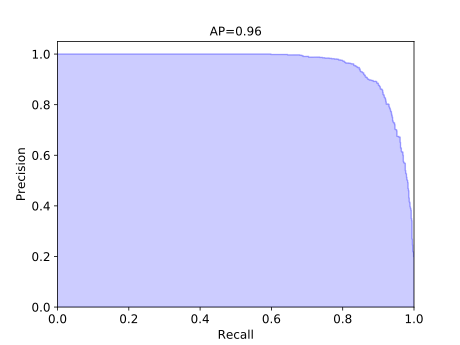
Top activated images:
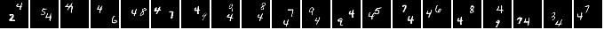
Activation:
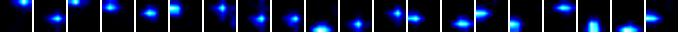
Unit01 for detecting digit 3
Precision:
@100=0.57 @300=0.61 @500=0.58 @700=0.58
@(recall=0.25)=0.59 @(recall=0.50)=0.58 @(recall=0.75)=0.56
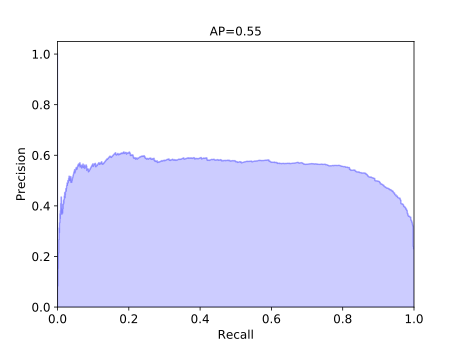
Top activated images:
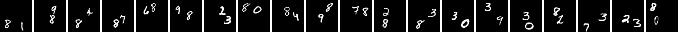
Activation:
Unit02 for detecting digit 5
Precision:
@100=1.00 @300=0.99 @500=0.95 @700=0.87
@(recall=0.25)=1.00 @(recall=0.50)=0.96 @(recall=0.75)=0.80
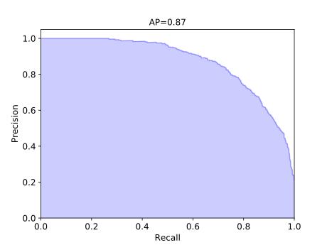
Top activated images:
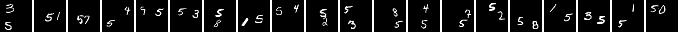
Activation:
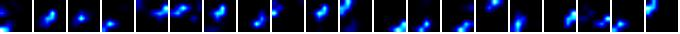
Unit03 for detecting digit 6
Precision:
@100=0.63 @300=0.70 @500=0.69 @700=0.67
@(recall=0.25)=0.70 @(recall=0.50)=0.68 @(recall=0.75)=0.61
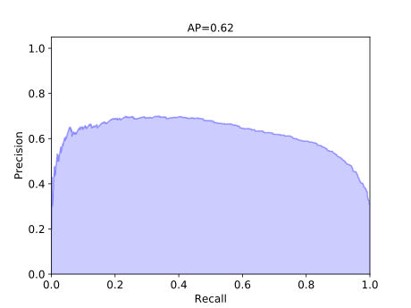
Top activated images:
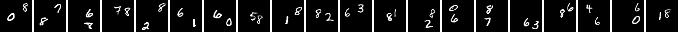
Activation:
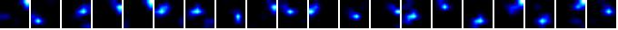
Unit04 for detecting digit 7
Precision:
@100=0.78 @300=0.69 @500=0.61 @700=0.57
@(recall=0.25)=0.69 @(recall=0.50)=0.57 @(recall=0.75)=0.50
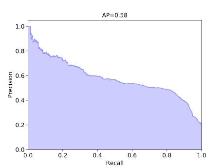
Top activated images:
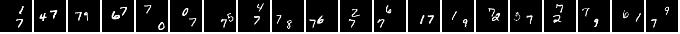
Activation:
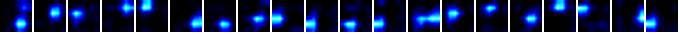
Unit05 for detecting digit 2
Precision:
@100=0.99 @300=0.94 @500=0.86 @700=0.80
@(recall=0.25)=0.95 @(recall=0.50)=0.86 @(recall=0.75)=0.69
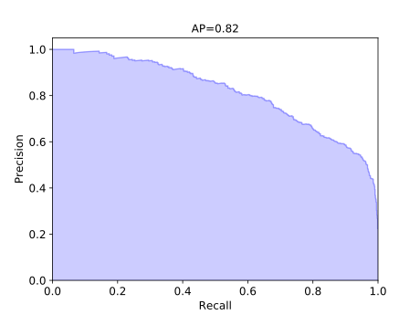
Top activated images:
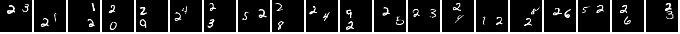
Activation:
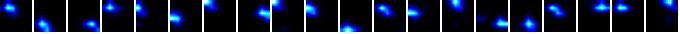
Unit06 for detecting digit 9
Precision:
@100=0.85 @300=0.71 @500=0.67 @700=0.64
@(recall=0.25)=0.71 @(recall=0.50)=0.64 @(recall=0.75)=0.51
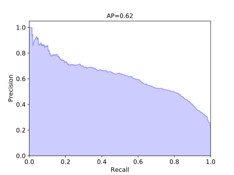
Top activated images:
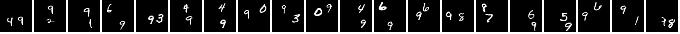
Activation:
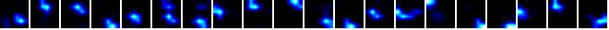
Unit07 for detecting digit 0
Precision:
@100=1.00 @300=1.00 @500=1.00 @700=0.93
@(recall=0.25)=1.00 @(recall=0.50)=1.00 @(recall=0.75)=0.90
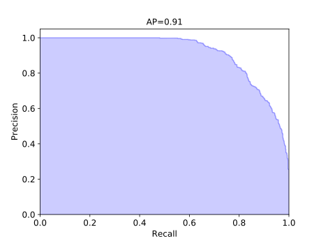
Top activated images:
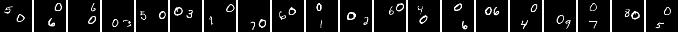
Activation:
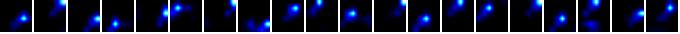
Unit-Concept Alignment
Units Alignment Score = 0.7417
Concepts Alignment Score = 0.6890
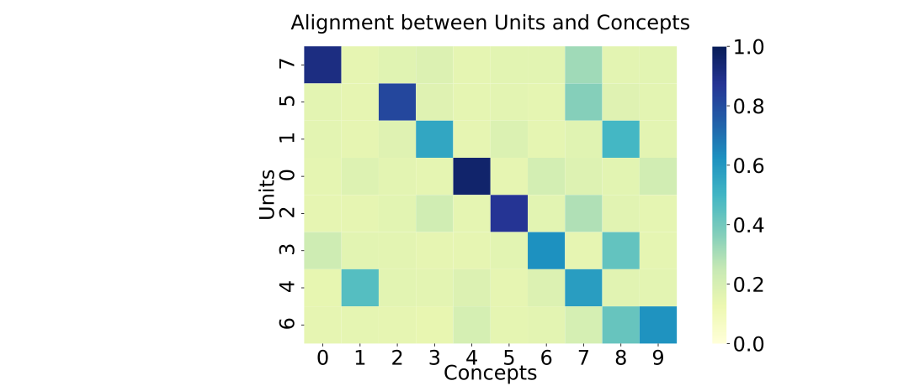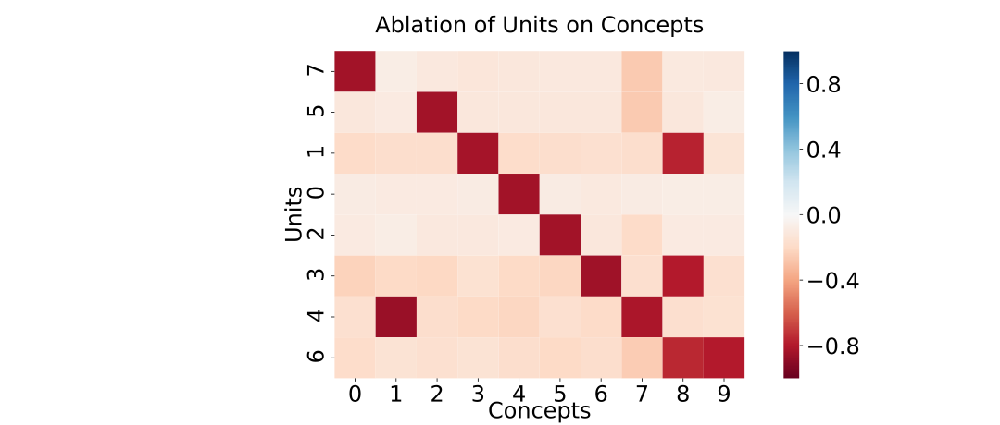